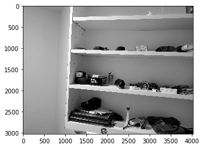
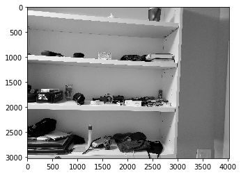
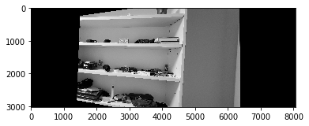
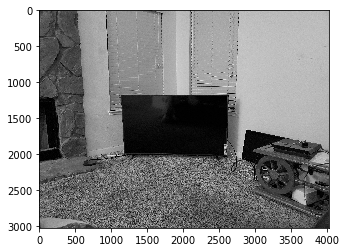
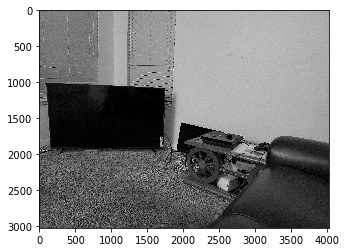
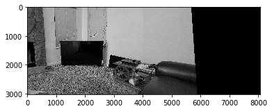

I took 2 pictures of my shelf at different angles:


After recovering the homography, I warped 1 shelf image using the homography to align with the second image

I then added this warped image to the second image to obtain the mosaic.
I performed a similar procedure with my TV setup as well


The warped image using the computed homography

The final mosaic

I noticed that my shelf mosaic has a dividing line between the 2 images that I was unable to get rid of while my TV image does not have a dividing line, which I thought was pretty interesting. It may be because my TV images have fewer distinct objects and slightly different lighting, due to which the dividing line was sufficiently blurred out.
Using the given starter code, I obtained the Harris corner points for my TV image. I slightly modified the get_harris_corners function to use corner_peaks with a min_distance=20 to get less points and have a clearer portrayal of the edges in the image.

I was surprised to see so many Harris corner points and realized that choosing the most important points is very essential to properly automating the mosaic creation process.